第五部分：高性能计算实践
高性能计算智能与预测技术
22.1 动机
本章介绍劳伦斯伯克利国家实验室（LBNL）的计算智能与预测技术（CIFT）项目。CIFT 的主要目标是推广高性能计算（HPC）工具与技术在流数据分析中的应用。LBNL 注意到数据量被援引为 SEC 和 CFTC 在发布 2010 年闪崩报告时延误五个月的原因，随即启动了 CIFT 项目，将 HPC 技术应用于金融数据的管理与分析。利用流数据及时做出决策是众多业务场景的基本要求，例如预防电网即将发生的故障或金融市场的流动性危机。在所有这些场景中，HPC 工具均能胜任处理复杂数据依赖关系并及时提供解决方案的任务。多年来，CIFT 已在多种形式的流数据上开展研究，涵盖车辆交通、电网、电力使用等领域。以下各节将阐述 HPC 系统的关键特性，介绍几种专用工具，并提供使用这些 HPC 工具进行流数据分析的示例。
22.2 监管机构对 2010 年闪崩的应对
2010年5月6日，约下午2点45分p.m（U.S东部夏令时），U.S股票市场的道琼斯工业平均指数经历了近10%的暴跌，随后几分钟内又收复了大部分跌幅。监管
机构历时约五个月才完成一份调查报告。在调查此次崩盘的国会听证会上，海量数据（约20TB）被列为造成长期延误的主要原因。由于HPC系统（如美国国家能源研究科学计算（NERSC）中心的系统）1 通常可在几分钟内处理数百TB的数据，因此处理金融市场数据对我们而言应不成问题。这促成了CIFT项目的成立，其使命是将HPC技术与工具应用于金融数据分析。金融大数据的一个关键特征是它主要由时间序列构成。多年来，CIFT团队及众多合作者已开发出用于分析多种不同形式数据流和时间序列的技术。本章简要介绍HPC系统（包括硬件（第22.4节）和软件（第22.5节）两部分），并回顾了若干成功应用案例（第22.6节）。最后，我们对迄今为止的愿景与工作进行总结，并为有兴趣的读者提供联系方式。
1 NERSC是由U.S能源部资助的国家用户设施，位于LBNL。有关NERSC的更多信息，请访问 http://nersc.gov/.
22.3 背景
计算技术的进步使寻找复杂模式变得更加容易。这种模式发现能力推动了近年来一系列重大科学突破，例如希格斯粒子的发现（Aad et al. [2016]）以及引力波的探测（Abbot et al. [2016]）。同样的能力也是众多互联网公司的核心支撑，例如用于实现用户与广告主的精准匹配（Zeff and Aronson [1999]，Yen et al. [2009]）。然而，科学界与商业界所使用的硬件和软件存在相当大的差异。HPC工具具备若干关键优势，有望在各类商业应用中发挥重要作用。面向科学家的工具通常构建于高性能计算（HPC）平台之上，而面向商业应用的工具则构建于云计算平台之上。就从海量数据中筛选有效模式这一目标而言，两种方法均已被证明行之有效。然而，HPC系统最具代表性的应用场景是大规模仿真，例如用于预测未来数日区域性风暴的天气模型（Asanovic et al. [2006]）。相比之下，商业云计算最初的动机是需要并发处理大量独立数据对象（数据并行任务）。就我们的工作而言，我们主要关注流数据的分析，尤其是高速复杂数据流，例如来自监控国家电网和高速公路系统的传感器网络所产生的数据流。这种流式工作负载对于 HPC 系统和云系统来说都不理想（详见下文），但我们认为，HPC 生态系统在应对流数据分析方面比云生态系统更具优势。云系统最初是为并行数据任务而设计的，可以并发处理大量独立数据对象，因此该系统
被设计为追求高吞吐量，而非实时响应。然而，许多商业应用需要实时或近实时的响应。例如，电网中的不稳定事件可能在数分钟内发展演变为灾难性事故；若能足够迅速地识别出其特征信号，便可将灾难扼杀于萌芽状态。类似地，金融研究文献中已有对新兴流动性不足事件信号的识别方法；若能在活跃交易时段快速捕捉这些信号，便可提供干预选项，防止市场冲击并避免闪崩。在这些场景中，优先保障快速响应能力至关重要。数据流在定义上是逐步可获取的，因此可供并行处理的数据对象数量往往有限。通常，仅有最近固定数量的数据记录可用于分析。在这种情况下，充分利用多核中央处理器（CPUs）算力的有效方法，是将针对单个数据对象（或单个时间步）的分析工作分配给多个 CPU 核心。HPC 生态系统为此类工作提供了比云生态系统更先进的工具。以上便是驱动我们开展本项研究的主要出发点。关于 HPC 系统与云系统的更详尽比较，有兴趣的读者可参阅 Asanovic 等人的研究。 [2006]。特别是 Fox 等人的研究。 [2015] 建立了一套完整的分类体系，用于描述任何应用场景下的异同点。简而言之，我们认为 HPC 社区在推动流式分析前沿技术发展方面大有可为。CIFT 项目的使命是将 LBNL 的 HPC 专业知识迁移到流式商业应用中。我们通过合作、示范和工具开发来推进这一使命。为评估 HPC 技术的潜在用途，我们与多个应用场景展开了深入合作。这一过程不仅让我们的 HPC 专家接触到各类领域，也使我们得以筹集资金建立示范设施。凭借多位早期支持者的慷慨捐助，我们建立了一个专用于此项工作的大规模计算集群。这台专用计算机（命名为 dirac1）允许用户使用 HPC 系统并自行评估其应用。我们还致力于工具开发，以使 HPC 系统在流式数据分析中更易于使用。以下各节将介绍 CIFT 专用机器的硬件与软件，以及部分示范与工具开发成果。主要亮点包括：数据处理速度提升 21 倍，早预警指标计算速度提升 720 倍。
22.4 HPC 硬件
据说第一代大数据系统是用从大学校园淘来的闲置计算机零件拼装而成的。这或许只是一个都市传说，但它揭示了 HPC 系统与云系统之间一个重要的区别。从理论上讲，HPC 系统采用定制高成本组件构建，而云系统则采用标准低成本商用组件构建。然而在实践中，由于全球对 HPC 系统的投入远小于个人计算机领域，制造商根本无力为 HPC 市场单独生产定制组件。事实上，HPC 系统与云系统一样，大多由商用组件组装而成。不过，由于两者的目标应用场景不同，在组件选型上存在一定差异。下面我们依次介绍计算单元、存储系统和网络系统。图 22.1 为 Magellan 集群约 2010 年时关键组件的高层架构示意图（Jackson 等 [2010]；Yelick 等） [2011]）。计算机硬件组件包括CPUs和图形处理单元（GPUs）。这些CPUs和GPUs在几乎所有情况下均为商业产品。例如，dirac1 上的节点采用 24 核 2.2GHz Intel 处理器，这在云计算系统中十分常见。目前，dirac1 不包含GPUs。网络系统由两部分组成：连接集群内部各组件的InfiniBand网络，以及连接外部世界的交换网络。在本例中，外部连接分别标记为"ESNet"和"ANI"。InfiniBand网络交换机在云计算系统中同样十分常见。图 22.1 中的存储系统同时包含旋转磁盘和闪存存储，这种组合也较为常见。不同之处在于，HPC系统的存储系统通常集中于计算节点之外，而典型的云计算系统则将存储系统分散于各计算节点之间。这两种方式各有优劣。例如，集中式存储通常以全局文件系统的形式向所有计算节点导出，便于处理存储在文件中的数据；然而，这需要连接CPUs与磁盘的高性能网络。
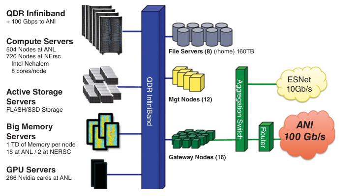
相比之下，分布式方案可使用较低带宽的网络，因为每个CPU附近均有本地存储。通常，分布式文件系统（如 Google 文件系统，Ghemawat、Gobioff 和 Leung [2003]）叠加于云计算系统之上，以使存储对所有CPUs可访问。总体而言，当前这一代HPC系统与云系统采用的商业硬件组件基本相同，其差异主要体现在存储系统和网络系统的架构上。显然，存储系统设计的差异可能影响应用性能，但云系统的虚拟化层或许才是造成应用性能差异的更主要原因。在下一节中，我们将讨论另一个可能产生更大影响的因素，即软件工具与库。
虚拟化技术通常用于云计算环境，使同一套硬件可供多个用户共享，并将不同软件环境相互隔离。这是云计算环境区别于HPC环境的最显著特征之一。在大多数情况下，计算机系统的三大基本组件——CPU、存储和网络——均被虚拟化。这种虚拟化具有诸多优势：例如，现有应用程序无需重新编译即可在CPU芯片上运行；多个用户可以共享同一套硬件；硬件故障可通过虚拟化软件加以修正；发生故障的计算节点上的应用程序也可以更便捷地迁移至其他节点。然而，虚拟化层也会带来一定的运行时开销，可能降低应用程序的性能。对于时延敏感型应用而言，这种性能下降可能成为关键瓶颈。
测试结果表明，性能差异可能相当显著。下面简要介绍 Jackson 等人报告的一项性能研究。 [2010]图 22.2 展示了在不同计算机系统上的性能下降情况。横轴下方的名称为NERSC常用的各类软件包。左侧柱状条对应商业云，中间对应 Magellan，右侧柱状条（如有）对应EC2-Beta-Opt 系统。在未经优化的商业云实例上，这些软件包的运行速度比在NERSC超级计算机上慢 2 至 10 倍。即便是价格更高的高性能实例，也存在明显的性能下降。
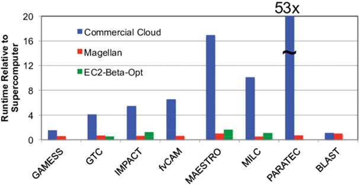
图 22.3 展示了针对软件包PARATEC导致性能下降主要因素的研究。从图 22.2 可以看出，PARATEC在商业云上的完成时间是HPC系统的 53 倍。从图 22.3 可以观察到，随着核心数（横轴）的增加，各测量性能（以TFLOP/s 为单位）之间的差距逐渐拉大。尤其是标记为"10G-TCPoEth Vm"的曲线，随着核心数的增长几乎没有提升。这一情况发生在网络实例使用虚拟化网络（基于以太网的TCP）的场景下。由此清晰地表明，网络虚拟化开销十分显著，已严重影响云平台的实用性。
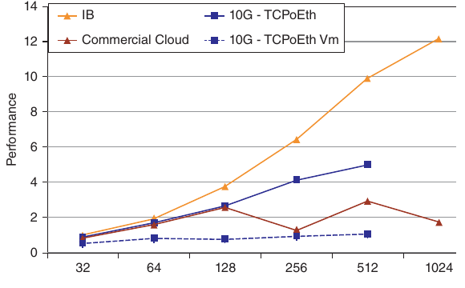
虚拟化开销问题已被广泛认识（Chen 等人 [2015]）。针对 I/O 虚拟化开销（Gordon 等人）的研究已相当丰富，并取得了相当进展。 [2012]）以及网络虚拟化开销（Dong et al. [2012]）。随着这些前沿技术逐渐被纳入商业产品，我们预计未来开销将会降低，但部分开销不可避免地会继续存在。为结束本节，我们简要探讨 HPC 与云计算的经济性对比。通常，HPC 系统由非营利研究机构和高校运营，而云系统则由商业公司提供。利润、客户留存及诸多其他因素影响着云系统的成本（Armbrust et al. [2010]）。2011 年，Magellan 项目报告指出："成本分析显示，与商业云服务商相比，DOE 中心具有成本竞争力，通常便宜 3 至 7 倍"（Yelick et al. [2011]）。一组高能物理学家认为其使用场景非常适合云计算，并开展了详细的对比研究（Holzman et al. [2017]）。其成本对比结果仍显示，对于可比计算任务，商业云服务比专用 HPC 系统贵约 50%；不过，作者在数据输入输出方面受到严格限制，以避免数据移动产生潜在的高额费用。对于复杂工作负载（如本书讨论的流式数据分析），我们预计 HPC 的成本优势将在未来持续存在。2016 年美国国家科学院的一项研究得出了相同结论：即便向亚马逊进行长期租用，处理 NSF 预期科学工作负载的费用也可能比 HPC 系统高出 2 至 3 倍（National Academies of Sciences 专栏 6.2 [2016]).
22.5 HPC 软件
具有讽刺意味的是，超级计算机真正的强大之处在于其专用软件。针对 HPC 系统和云系统，现有各种各样的软件包可供选择。大多数情况下，同一软件包在两个平台上均可使用。因此，我们选择聚焦于 HPC 系统所特有、且有潜力提升计算智能与预测技术的软件包。HPC 软件生态的一个显著特点是，大量应用软件通过消息传递接口（MPI）自行实现处理器间通信。事实上，MPI 是大多数科学计算书籍的核心内容（Kumar et al. [1994]，Gropp、Lusk 与 Skjellum [1999]）。因此，我们对 HPC 软件工具的介绍将从 MPI 开始。由于本书依赖数据处理算法，我们将重点介绍数据管理工具（Shoshami and Rotem [2010]).
22.5.1 消息传递接口
消息传递接口（Message Passing Interface）是一种用于并行计算的通信协议（Gropp、Lusk 与 Skjellum [1999]；Snir 等 [1988]）。它定义了若干点对点数据交换操作以及一些集合通信操作。MPI 标准是在早期多次构建可移植通信库的尝试基础上建立起来的。Argonne 国家实验室推出的早期实现版本 MPICH 具有高性能、强可扩展性和良好可移植性，这有助于 MPI 在科学计算用户群体中获得广泛认可。MPI 的成功，部分源于其将语言无关规范（LIS）与各语言绑定相分离的设计思路。这使得同一核心功能能够为多种不同编程语言所使用，进而促进了其普及。第一个 MPI 标准在 LIS 的基础上同时规定了 ANSI C 和 Fortran-77 语言绑定，草案规范于 1994 年超算大会上向用户社区公开发布。MPI 成功的另一关键因素是 MPICH 所采用的开源许可证。该许可证允许厂商获取源代码并开发各自的定制版本，从而使 HPC 系统厂商能够迅速推出自己的 MPI 库。时至今日，所有 HPC 系统均在其计算机上提供对 MPI 的支持。这种广泛采用也保证了 MPI 将继续成为 HPC 系统用户最青睐的通信协议。
22.5.2 层次数据格式 5
在介绍 HPC 硬件组件时，我们指出 HPC 平台中的存储系统通常与云平台中的存储系统有所不同。相应地，大多数用户用于访问存储系统的软件库也有所差异。这种差异可以追溯到数据概念模型的不同。通常，HPC 应用程序将数据视为多维数组，因此 HPC 系统上最流行的 I/O 库均针对多维数组的操作而设计。此处我们介绍使用最为广泛的数组格式库 HDF5（Folk 等 [2011]）。HDF5 是层次数据格式的第五个版本，由 HDF Group 开发维护。2 HDF5 中的基本数据单元是一个数组及其相关信息，如属性、维度和数据类型，这些信息合在一起称为数据集。数据集可以归并为称为"组"的较大单元，组又可以组织成更高层级的组。这种灵活的层次化组织方式使用户能够表达数据集之间的复杂关系。除了将用户数据组织到文件中的基础库之外，HDF Group 还提供了一套工具以及针对不同应用的 HDF5 专业化版本。例如，HDF5 包含一个性能分析工具。NASA 为其地球观测系统（EOS）数据开发了一个名为 HDF5-EOS 的 HDF5 专业化版本；下一代 DNA 序列研究社区也为其生物信息学数据制作了名为 BioHDF 的专业化版本。HDF5 为在 HPC 平台上访问存储系统提供了一种高效方式。在测试中，我们已证明使用 HDF5 存储股票市场数据可以显著加快分析操作的速度。这在很大程度上得益于其高效的压缩/解压缩算法——该算法能够最大限度地减少网络流量和 I/O 操作，这引出了我们的下一个要点。
2 HDF Group 的网址为 https://www.hdfgroup.org/.
22.5.3 原位处理
在过去几十年间，CPU 的性能大约每 18 个月翻一番（摩尔定律），而磁盘性能的年均提升幅度不足 5%。这一差距导致将 CPU 内存内容写出所需的时间越来越长。为解决这一问题，多项研究工作聚焦于原位分析能力（Ayachit et al. [2016]）。在当前这一代处理系统中，自适应 I/O 系统（ADIOS）是应用最为广泛的（Liu et al. [2014]）。它采用多种数据传输引擎，允许用户介入 I/O 流并执行分析操作。这一机制非常实用，因为无关数据可以在传输过程中被直接丢弃，从而避免进行缓慢且大量的存储。同样的原位机制也使写操作能够极为迅速地完成——事实上，ADIOS 最初正是凭借其写入速度而受到广泛关注。此后，ADIOS 开发人员与多个大型团队开展合作，持续改进其 I/O 流水线及分析能力。
由于 ADIOS 支持流式数据访问，它对于 CIFT 工作同样高度相关。在多次演示中，采用 ICEE 传输引擎的 ADIOS 能够实时完成分布式流式数据分析（Choi et al. [2013]）。我们将在下一节描述一个涉及聚变等离子体中斑块（blob）的应用案例。综上所述，原位数据处理能力是 HPC 生态系统中另一个极为有用的工具。
22.5.4 融合
我们之前提到，HPC 硬件市场只是整体计算机硬件市场的一小部分。与整体软件市场相比，HPC 软件市场则更为狭小。迄今为止，HPC 软件生态系统主要由少数小型厂商以及若干开源贡献者共同维护。因此，HPC 系统用户面临着巨大压力，被迫迁移至支持更完善的云端软件系统。这是推动 HPC 软件与云端软件融合的重要驱动力（Fox et al. [2015]）。尽管融合似乎已是大势所趋，我们仍倡导一种能够保留上述软件工具优势的融合方案。CIFT 项目的动机之一，正是探索将上述工具迁移至未来计算环境的可行路径。
22.6 应用案例
数据处理在现代科学研究中举足轻重，部分研究者将其称为科学研究的第四范式（Hey、Tansley 与 Tolle [2009]）。在经济学领域，同样的数据驱动研究活动催生了风靡一时的行为经济学（Camerer 与 Loewenstein [2011]）。近年来数据驱动研究的诸多进展，大多建立在机器学习应用之上（Qiu et al. [2016]，Rudin 与 Wagstaff [2014]）。机器学习在行星科学、生物信息学等众多领域取得的成功，引发了来自不同学科研究者的广泛关注。本节余下部分将介绍若干将先进数据分析技术应用于各领域的典型案例，其中许多用例均源自 CIFT 项目。
22.6.1 超新星搜寻
在天文学中，宇宙膨胀速度等众多重要事实的确定，均通过测量爆炸中的 Ia 型超新星发出的光来实现（Bloom et al. [2012]）。搜寻爆发中超新星的过程称为全天巡天成像观测。帕洛马暂现源工厂（PTF）便是此类全天巡天的典型案例（Nicholas et al. [2009]）。PTF 望远镜每隔 45 分钟扫描一次夜空并生成一组图像。新图像与同一天区的历史观测结果进行比对，以判断
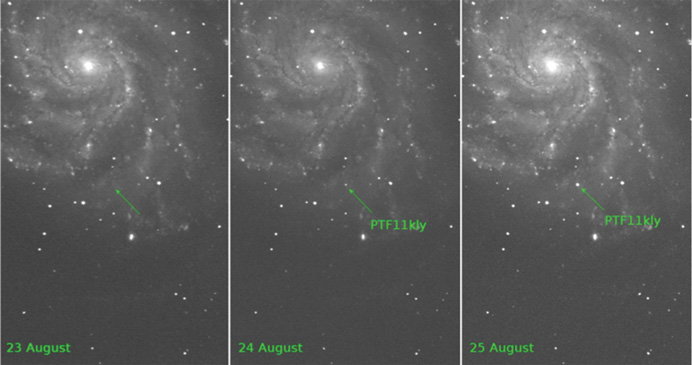
识别发生了哪些变化并对变化进行分类。过去，此类识别与分类任务由天文学家人工完成。然而，来自 PTF 望远镜的图像数量如今已过于庞大，无法依赖人工检视。一套针对上述图像处理任务的自动化工作流已被开发完成，并部署于多个计算中心。图 22.4 展示了在爆炸过程中被最早识别出的超新星。2011 年 8 月 23 日，该天区尚未发现此星的任何迹象，但 8 月 24 日便出现了一丝微弱的光亮。如此迅速的变化使全球天文学家得以开展详细的后续观测——这对确定宇宙膨胀相关参数至关重要。对这颗超新星的快速识别，有力地展示了自动化工作流的机器学习能力。该工作流对输入图像进行处理，提取自上次观测以来发生变化的天体，随后根据此前的训练结果对变化天体进行分类，给出初步类型判断。由于用于从快速变化瞬变天体中提取新科学发现的后续资源十分宝贵，分类结果不仅需要给出假定类型，还须提供分类的可能性与置信度。利用基于 PTF 数据训练的分类算法，瞬变天体和变星的误标率整体仅为 3.8%。预计在即将开展的巡天项目（如大型综合巡天望远镜）中，还将通过进一步工作实现更高的准确率。
22.6.2 聚变等离子体中的团块
物理学、气候学等领域的大规模科学探索是由数千名科学家共同参与的大型国际合作项目。随着这些
合作产生的数据量不断增加、产出速率持续加快，现有的工作流管理系统已难以跟上节奏。一种必要的解决方案是在数据到达相对较慢的磁盘存储系统之前，对其进行处理、分析、汇总与压缩，这一过程称为过境处理（in-transit processing，又称飞行中分析）。通过与 ADIOS 开发人员合作，我们实现了 ICEE 传输引擎，从而大幅提升了协同工作流系统的数据处理能力（Choi et al. [2013]）。这一新特性显著改善了分布式工作流的数据流管理。测试表明，ICEE 引擎使多个大型国际合作项目能够进行近实时的协作决策。本文简要介绍涉及 KSTAR 的核聚变合作。KSTAR 是一座配备全超导磁体的核聚变反应堆，位于韩国，但在全球拥有多支相关研究团队。在聚变实验运行期间，部分研究人员在 KSTAR 现场控制物理装置，而另一些人则希望通过协作分析前序实验来参与，为下一次运行的装置配置提供建议。在分析实验测量数据过程中，科学家可能会运行仿真或检阅已有仿真结果，以研究参数选取。通常，相邻两次运行之间间隔约 10 至 30 分钟，所有协作分析均须在此时间窗口内完成，方能对下一次运行产生影响。我们利用两种不同类型的数据验证了 ICEE 工作流系统的功能：一种是在 KSTAR 测量的电子回旋辐射成像（ECEI）数据，另一种是来自 XGC 建模的合成诊断数据。分布式工作流引擎需要从这两个数据源采集数据，提取称为 blob 的特征，追踪这些 blob 的运动轨迹，预测实验测量中 blob 的运动趋势，并就应执行的操作提供建议。图 22.5 展示了 ECEI 数据的处理流程。XGC 仿真数据的工作流与图 22.5 所示类似，区别在于 XGC 数据位于 NERSC。
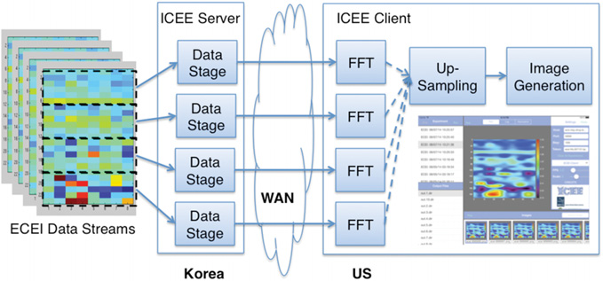
为了能够实时完成上述分析任务，借助 ADIOS 的 ICEE 传输引擎实现有效的数据管理仅是其中一环。第二环是高效地检测 blob（Wu et al. [2016]）。在本研究中，我们需要通过仅选取必要的数据块来减少跨广域网传输的数据量。随后，我们识别 blob 中的所有单元格，并将这些单元格按空间连通区域进行分组，每个连通区域构成一个 blob。我们开发的新算法通过充分利用节点间通信的 MPI 以及同一节点上 CPU 核之间的共享内存，将任务分配至不同的 CPU 核并行处理。此外，我们还更新了连通分量标记算法，以正确识别边缘处的 blob——这类 blob 在早期检测算法中经常被遗漏。总体而言，我们的算法充分利用 HPC 系统中可用的并行性，能够在每个时间步内的数毫秒内完成 blob 识别。
22.6.3 日内用电高峰
公用事业公司正在部署高级计量基础设施（AMI），以前所未有的空间和时间精度采集电力消耗数据。这一规模庞大且快速增长的数据流，为基于大数据分析平台的预测能力提供了重要的验证场景（Kim 等 [2015]）。这些前沿数据科学技术与行为理论相结合，使行为分析能够深入挖掘电力消耗模式及其内在驱动因素（Todd 等 [2014]）。由于电力难以大规模储存，其发电量必须与消耗量实时匹配。当需求超过发电容量时，通常会在消费者最需要用电的时段发生停电。由于扩大发电容量成本高昂且需要数年时间，监管机构和电力公司制定了一系列定价机制，旨在抑制用电高峰期间的非必要用电。为衡量定价政策对峰值需求的有效性，可以分析由AMI产生的用电数据。我们的研究专注于为一项行为分析研究提取家庭用电量的基线模型。理想情况下，基线模型应能捕捉家庭用电量的规律，涵盖除新定价机制以外的所有特征。建立此类模型面临诸多挑战。例如，许多可能影响用电量的特征均未被记录，如空调的温度设定点或新家用电器的购置。其他特征（如室外温度）虽然已知，但其影响难以用简单函数加以描述。我们的研究开发了若干能够满足上述要求的新基线模型。目前，黄金标准基线是精心设计的随机对照组。我们证明，新的数据驱动基线能够准确预测对照组的平均用电量。在本次评估中，我们使用了来自美国某地区的一项精心设计的研究，该地区在五月至八月期间，下午和傍晚的用电量最高。
尽管本研究侧重于证明新基线模型对群体分析的有效性，但我们认为这些新模型在未来对个体家庭的研究中同样具有价值。我们探索了多种标准黑箱方法。在机器学习方法中，我们发现梯度树提升（GTB）比其他方法更为有效。然而，最精确的GTB模型需要将滞后变量作为特征（例如，前一天和前一周的用电量）。在我们的研究中，需要使用第T-1年的数据来建立第T年和第T+1年的基线用电量。前一天和前一周的滞后变量将引入第T-1年以外的近期信息。我们尝试修改预测流程，以近期预测值替代前一天和前一周的实际测量值；然而，测试结果表明，预测误差会随时间累积，导致进入夏季约一个月后出现不切实际的预测结果。这种预测误差的累积现象在时间序列的连续预测流程中十分常见。
为解决上述问题，我们设计了若干白盒方法，其中效果最佳的方法称为 LTAP，在此予以介绍。LTAP 基于以下事实：每日总用电量可由日均气温的分段线性函数精确描述。这一事实使我们能够对每日总用电量进行预测。进一步假设研究期间每户家庭的用电模式保持不变，我们便可由日总用电量推算出各小时的用电值。该方法被证明具有自洽性，即预测程序能精确还原第 T-1 年的用电量，且对照组在第 T 年和第 T+1 年的预测值均与实测值非常接近。两个处理组在高峰需求时段的用电量均有所下降，且主动组的降幅大于被动组。该观察结果与其他研究结论一致。
尽管新的数据驱动基准模型 LTAP 能准确预测对照组的平均用电量，但在预测旨在降低高峰需求时段用电量的新分时电价的影响方面，存在一定差异（见图 22.6）。例如，以对照组为基准，主动组在实施新电价第一年的高峰需求时段平均用电量减少了 0.277 kWh（约 2 kWh 中减少），第二年减少了 0.198 kWh。以 LTAP 为基准，两年的平均降幅均仅为 0.164 kWh。部分差异可能源于处理组的自选择偏差，尤其是主动组——该组家庭须主动选择参与试验。选择加入主动组的家庭很可能本身就更适合利用新定价结构。我们认为，LTAP 基准是应对自选择偏差的有效方法，并计划开展进一步研究加以验证。
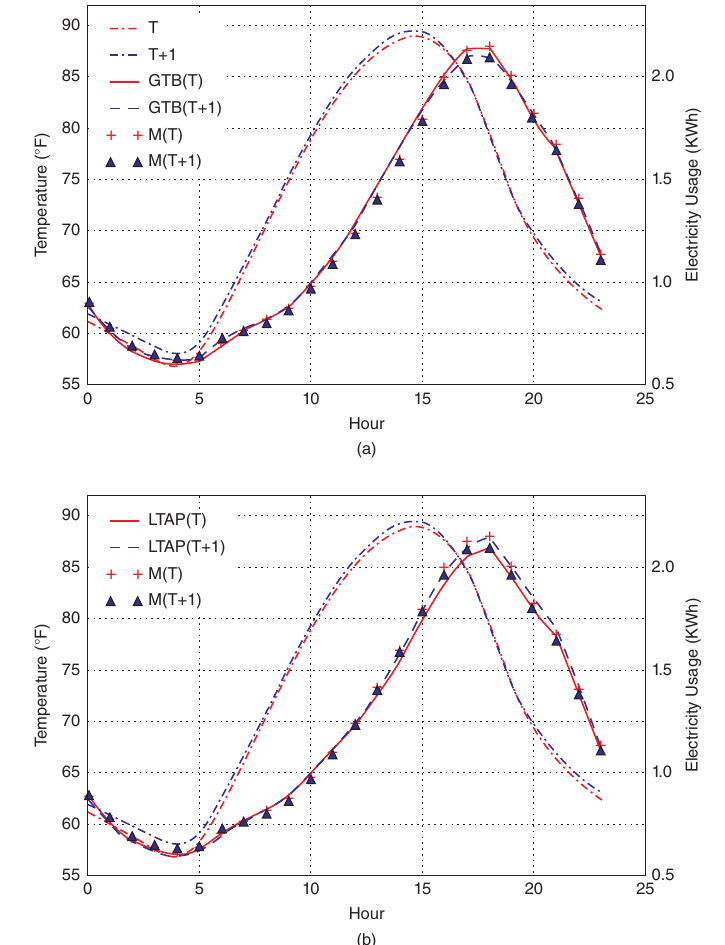
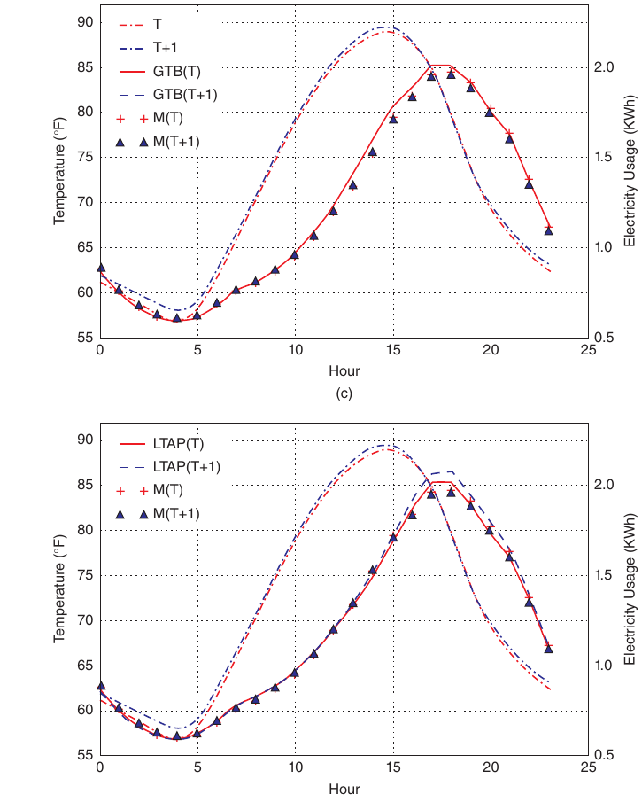
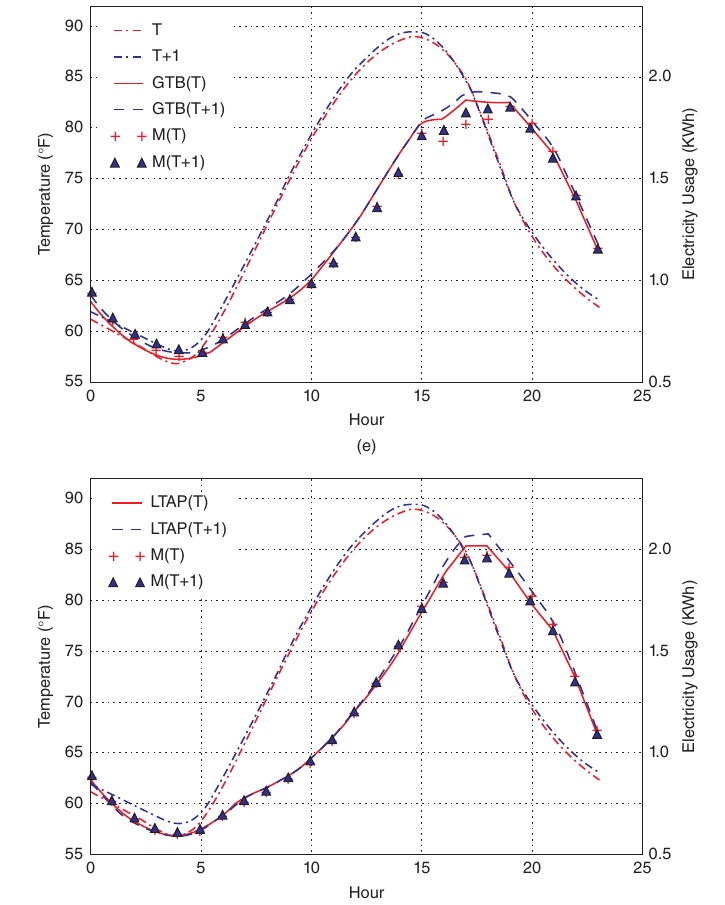
22.6.4 2010 年闪崩事件
SEC 和 CFTC 调查 2010 年闪崩事件所花费的漫长时间，是 CIFT 开展这项研究的最初动机。联邦调查人员需要筛查数十 TB 的数据以寻找崩盘的根本原因。由于 CFTC 公开将数据量庞大列为调查延迟的主要原因，我们从寻找能够轻松处理数十 TB 数据的 HPC 工具入手开展研究。因为 HDF5 是最常用的 I/O 库，我们首先将 HDF5 应用于组织大规模股票交易数据（Bethel et al. [2011]).
让我们简要回顾 2010 年闪崩事件的经过。5 月 6 日下午约 2 时 45 p.m（U.S，美国东部夏令时），道琼斯工业平均指数骤跌近 10%，众多股票以每股一美分——即交易所允许的最低价格——成交。图 22.7 展示了另一个极端案例：苹果公司股票（代码 AAPL）以每股 100,000 美元——即交易所允许的最高价格——成交。这些异常事件显然严重动摇了投资者对金融市场的信心。
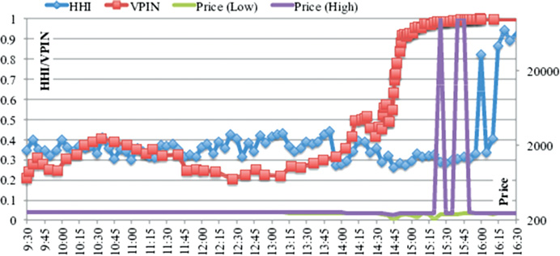
投资者强烈要求了解这些事件的成因。为使研究成果切实服务于金融行业，我们尝试运用 HDF5 软件，将其应用于计算预警指标这一具体任务。根据机构投资者、监管机构和学术界的建议，我们实现了两套已被证明在闪崩前具有"预警"特性的指标，分别为成交量同步知情交易概率（VPIN）（Easley、Lopez de Prado 与 O'Hara [2011]）以及赫芬达尔—赫希曼指数（HHI，HHI）（Hirschman [1980]）的市场碎片化变体。我们以 C++ 语言实现了上述两种算法，同时借助 MPI 进行处理器间通信，以充分发挥 HPC 系统的性能优势。选择这一方案的逻辑在于：一旦上述某个预警指标被证明有效，高性能实现方式将使我们能够尽早提取预警信号，从而为采取纠正措施争取时间。
我们的工作是最早证明可以足够快速计算预警信号的尝试之一。在研究中，我们实现了两个版本的程序：一个使用以 HDF5 文件组织的数据，另一个从常用的 ASCII 文本文件中读取数据。图 22.8 展示了处理所有 S&P 500 只股票 10 年交易记录所需的时间。由于 10 年交易数据的规模相对较小，我们还将数据复制了 10 份。在单个 CPU 核心上（图 22.8 中标记为"Serial"），使用 ASCII 数据约需 3.5 小时，而使用 HDF5 文件仅需 603.98 秒。当使用 512 个 CPU 核心时，使用 HDF5 文件的处理时间缩短至 2.58 秒，实现了 234 倍的加速。在规模更大的复制数据集上，HPC 代码在计算这些指标方面的优势更加显著。数据量增加 10 倍后，计算机完成任务的时间仅延长了约 2.3 倍，呈现出低于线性增长的延迟特性。
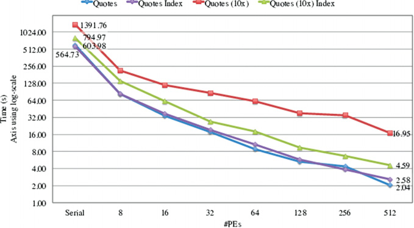
使用更多 CPU 可使 HPC 的可扩展性进一步提升。图 22.8 还表明，面对大规模数据集，我们可以进一步利用 HDF5 中提供的索引技术来降低数据访问时间，从而缩短整体计算时间。当使用 512 个 CPU 核心时，总运行时间从 16.95 秒降至 4.59 秒，得益于 HPC 的索引技术实现了 3.7 倍的加速。
22.6.5 成交量同步知情交易概率（VPIN）校准
理解金融市场的波动性需要处理海量数据。我们将数据密集型科学应用中的技术运用于这一任务，并通过在大量期货合约上计算一种称为成交量同步知情交易概率（VPIN）的早期预警指标，验证了其有效性。测试数据包含交易最为活跃的一百份期货合约共67个月的交易记录。平均而言，处理单份合约67个月的数据约需1.5秒。在采用该HPC实现之前，完成同样的任务大约需要18分钟。我们的HPC实现实现了720倍的加速。需要指出的是，上述加速完全源于算法层面的改进，尚未借助并行化的优势。HPC代码可通过MPI在并行机器上运行，从而进一步缩短计算时间。我们工作中采用的软件技术包括：上文所述通过HDF5实现的更快I/O访问，以及用于存储计算VPIN所需的bar与bucket的更精简数据结构。更多详细信息请参见Wu等人的文献。 [2013].
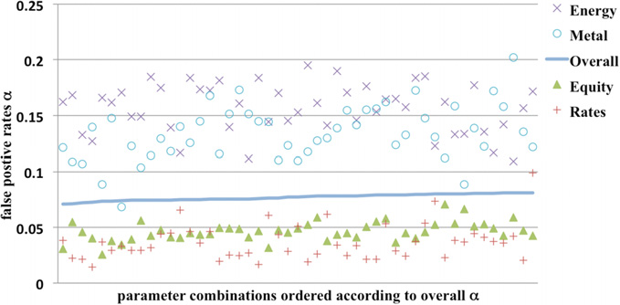
借助更快的VPIN计算程序，我们也能够更深入地探索参数选择。例如，我们找到了能将VPIN在一百份合约上的误报率从20%降低至仅7%的参数值，见图22.9。实现该性能的参数选择如下：（1）用交易中位价对成交量条定价（而非分析中通常采用的收盘价）；（2）每天200个bucket；（3）每个bucket 30个bar；（4）计算VPIN的支撑窗口 = 1天，事件持续时间 = 0.1天；（5）使用自由度为 \(\nu=0.1\)，以及（6）CDF 的 VPIN 阈值 = 0.99。同样，这些参数在所有期货合约的整体上提供了较低的假阳性率，并非针对单个合约拟合的结果。对于不同类别的期货合约，可以选择不同的参数以实现更低的假阳性率。在某些情况下，假阳性率可以显著低于 1%。根据图 22.9，利率和指数期货合约通常具有较低的假阳性率，而商品类期货合约（如能源和金属）通常具有较高的假阳性率。此外，一个计算 VPIN 的更快程序使我们能够验证 VPIN 所识别的事件具有"内在性"——即改变 VPIN CDF 阈值等参数时，仅会轻微改变所检测到的事件数量。若这些事件是随机的，将该阈值从 0.9 调整至 0.99 将使事件数量减少十倍。简言之，更快的 VPIN 程序还使我们能够确认 VPIN 的实时有效性。
22.6.6 利用非均匀快速傅里叶变换揭示高频事件
高频交易在所有电子金融市场中普遍存在。随着算法逐步取代原先由人工完成的任务，类似 2010 年闪崩的级联效应可能愈发频繁。在我们的研究（Song et al. [2014]）中，我们汇集了多种高性能信号处理工具，以深化对这些交易活动的理解。作为示例，我们总结了对天然气期货交易价格进行的傅里叶分析。通常，傅里叶分析应用于等间距数据。由于市场活动具有突发性特征，我们可能希望依据交易活动指数对金融时间序列进行采样。例如，VPIN 将金融序列作为成交量的函数进行采样。然而，对按时序排列的金融序列进行傅里叶分析仍具有参考价值。为此，我们采用非均匀快速傅里叶变换（FFT）方法。
通过对天然气期货市场的傅里叶分析，我们发现了市场中存在高频交易（HFT）的有力证据。与高频率对应的傅里叶分量（1）在近年来愈发显著，（2）远强于市场结构本身所能预期的水平。此外，每分钟第一秒内发生了大量交易活动，这是以时间加权平均价（TWAP）为目标的算法触发交易的典型特征。对交易数据进行傅里叶分析表明，每分钟一次频率处的活跃度远高于相邻频率（见图22.10）。注意纵轴为对数刻度。每分钟一次频率处的活跃强度超过相邻频率的十倍以上。此外，该活跃度精确集中于每分钟一次的频率处，表明这些交易由人为构造的自动化事件触发。我们认为这是TWAP算法在该市场中占有重要地位的有力证据。
我们预期频率分析将呈现出强烈的日周期规律。在图22.10中，我们期望频率365处的振幅较大。然而，实际上振幅最高的频率为366。这可以解释为2012年是闰年。这也验证了非均匀FFT能够捕捉到预期信号。第二和第三高振幅对应的频率分别为732和52，即每天两次与每周一次，这同样在意料之中。我们还对交易量应用了非均匀FFT，并发现了算法交易的进一步证据。此外，信号表明近年来算法交易的存在更为显著。显然，非均匀FFT算法对于分析高度不规则的时间序列具有重要价值。
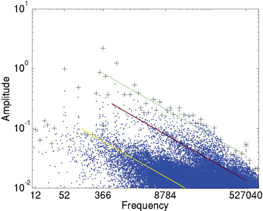
22.7 总结与参与邀请
目前，构建大规模计算平台主要有两种方式：HPC 方法和云计算方法。大多数科学计算工作采用 HPC 方法，而大多数商业计算需求则通过云计算方法满足。传统观点认为，HPC 方法仅占据无关紧要的小众市场。这种看法并不正确。HPC 系统对科学研究的进步至关重要。它们在希格斯粒子和引力波等激动人心的重大科学发现中发挥了重要作用，推动了行为经济学等新兴学科的发展，以及互联网商业模式的创新。超大规模 HPC 系统的实用价值促成了2015年《国家战略计算倡议》的出台。3 目前有多项努力致力于通过加速 HPC 工具在商业应用中的普及来进一步提升其价值。HPC4Manufacturing4 这一努力正在开创性地将相关知识转移至 U.S 制造业，并已引起广泛关注。现在正是大力推动 HPC 以满足其他关键商业需求的时机。近年来，我们将 CIFT 作为一大类可从 HPC 工具和技术中获益的商业应用加以开发。在诸如如何应对电力变压器电压波动以及市场即将发生重大波动事件的早期预警信号等决策场景中，HPC 软件工具能够帮助决策者在灾难性事件发生前及时捕捉信号、提供充分的预测置信度并预判后果。这类应用具有复杂的计算需求，且通常对响应时间有严格要求。HPC 工具比云端工具更能满足这些需求。在我们的研究工作中，已验证 HPC I/O 库 HDF5 可将数据访问速度提升21倍，而 HPC 技术可将"闪崩"预警指标 VPIN 的计算速度提升720倍。我们还开发了额外的算法，使我们能够预测未来数年的日峰值用电量。
3 《国家战略计算倡议》计划可在线查阅，网址为 https://www.whitehouse.gov/sites/whitehouse.gov/files/images/NSCI%20Strategic%20Plan.pdf。有关该主题的维基百科页面（https://en.wikipedia.org/wiki/National_Strategic_Computing_Initiative）亦提供了一些指向更多信息的有用链接。
4 有关 HPC4Manufacturing 的信息可在线查阅，网址为 https://hpc4mfg.llnl.gov/.
我们预期，将 HPC 工具和技术应用于其他场景同样可取得类似的显著成效。除上述性能优势外，多项已发表的研究（Yelick et al. [2011]，Holzman et al. [2017]）表明 HPC 系统同样具有显著的价格优势。根据工作负载对 CPU、存储和网络的需求，使用云系统的成本可能比使用 HPC 系统高出 50%，某些情况下甚至高达七倍。对于本书所描述的复杂分析任务而言，由于需要持续摄取数据进行分析，我们预计这一成本优势将长期保持显著。CIFT 正在加大力度将 HPC 技术向私营企业转移，使其同样能够享受大型科研机构所拥有的价格与性能优势。我们早期的合作方已提供资金，用于为我们的工作建立一套专用的 HPC 系统。这一资源将使有意愿的机构更便捷地在 HPC 系统上测试其应用程序。我们欢迎各种形式的合作。有关 CIFT 的更多信息，请访问 CIFT 的网页： http://crd.lbl.gov/cift/.
22.8 致谢
CIFT 项目由 David Leinweber 博士创立。Horst Simon 博士于 2010 年将其引入 LBNL。E. W. Bethel 博士和 D. Bailey 博士领导该项目长达四年。CIFT 项目获得了多位捐助者的慷慨资助。本研究部分由 U.S 科学办公室下属高级科学计算研究办公室资助，合同编号为 DE-AC02-05CH11231。本研究还使用了在同一合同支持下运营的国家能源研究科学计算中心的资源。
参考文献
- Aad, G., et al. (2016): “Measurements of the Higgs boson production and decay rates and coupling strengths using pp collision data at \(\sqrt{s}=7\) and \(8\,\mathrm{TeV}\) in the ATLAS experiment.” The European Physical Journal C, Vol. 76, No. 1, p. 6.
- Abbott, B.P. et al. (2016): “Observation of gravitational waves from a binary black hole merger.” Physical Review Letters, Vol. 116, No. 6, p. 061102.
- Armbrust, M., et al. (2010): “A view of cloud computing.” Communications of the ACM, Vol. 53, No. 4, pp. 50-58.
- Asanovic, K. et al. (2006): “The landscape of parallel computing research: A view from Berkeley.” Technical Report UCB/EECS-2006-183, EECS Department, University of California, Berkeley.
- Ayachit, U. et al. “Performance analysis, design considerations, and applications of extreme-scale in situ infrastructures.” Proceedings of the International Conference for High Performance Computing, Networking, Storage and Analysis. IEEE Press.
- Bethel, E. W. et al. (2011): “Federal market information technology in the post Flash Crash era: Roles for supercomputing.” Proceedings of WHPCF’2011. ACM. pp. 23-30.
- Bloom, J. S. et al. (2012): “Automating discovery and classification of transients and variable stars in the synoptic survey era.” Publications of the Astronomical Society of the Pacific, Vol. 124, No. 921, p. 1175.
- Camerer, C.F. and G. Loewenstein (2011): “Behavioral economics: Past, present, future.” In Advances in Behavioral Economics, pp. 1-52.
- Chen, L. et al. (2015): “Profiling and understanding virtualization overhead in cloud.” Parallel Processing (ICPP), 2015 44th International Conference. IEEE.
- Choi, J.Y. et al. (2013): ICEE: “Wide-area in transit data processing framework for near real-time scientific applications.” 4th SC Workshop on Petascale (Big) Data Analytics: Challenges and Opportunities in Conjunction with SC13.
- Dong, Y. et al. (2012): “High performance network virtualization with SR-IOV.” Journal of Parallel and Distributed Computing, Vol. 72, No. 11, pp. 1471-1480.
- Easley, D., M. Lopez de Prado, and M. O’Hara (2011): “The microstructure of the ‘Flash Crash’: Flow toxicity, liquidity crashes and the probability of informed trading.” Journal of Portfolio Management, Vol. 37, No. 2, pp. 118-128.
- Folk, M. et al. (2011): “An overview of the HDF5 technology suite and its applications.” Proceedings of the EDBT/ICDT 2011 Workshop on Array Databases. ACM.
- Fox, G. et al. (2015): “Big Data, simulations and HPC convergence, iBig Data benchmarking”: 6th International Workshop, WBDB 2015, Toronto, ON, Canada, June 16-17, 2015; and 7th International Workshop, WBDB 2015, New Delhi, India, December 14-15, 2015, Revised Selected Papers, T. Rabl, et al., eds. 2016, Springer International Publishing: Cham. pp. 3-17. DOI: 10.1007/978-3-319-49748-8_1.
- Ghemawat, S., H. Gobioff, and S.-T. Leung (2003): “The Google file system,” SOSP ’03: Proceedings of the nineteenth ACM symposium on operating systems principles. ACM. pp. 29-43.
- Gordon, A. et al. (2012): “ELI: Bare-metal performance for I/O virtualization.” SIGARCH Comput. Archit. News, Vol. 40, No. 1, pp. 411-422.
- Gropp, W., E. Lusk, and A. Skjellum (1999): Using MPI: Portable Parallel Programming with the Message-Passing Interface. MIT Press.
- Hey, T., S. Tansley, and K.M. Tolle (2009): The Fourth Paradigm: Data-Intensive Scientific Discovery. Vol. 1. Microsoft research Redmond, WA.
- Hirschman, A. O. (1980): National Power and the Structure of Foreign Trade. Vol. 105. University of California Press.
- Holzman, B. et al. (2017): “HEPCloud, a new paradigm for HEP facilities: CMS Amazon Web Services investigation.” Computing and Software for Big Science, Vol. 1, No. 1, p. 1.
- Jackson, K. R., et al. (2010): “Performance analysis of high performance computing applications on the Amazon Web Services Cloud.” Cloud Computing Technology and Science (CloudCom). 2010 Second International Conference. IEEE.
- Kim, T. et al. (2015): “Extracting baseline electricity usage using gradient tree boosting.” IEEE International Conference on Smart City/SocialCom/SustainCom (SmartCity). IEEE.
- Kumar, V. et al. (1994): Introduction to Parallel Computing: Design and Analysis of Algorithms. Benjamin/Cummings Publishing Company.
- Liu, Q. et al., (2014): “Hello ADIOS: The challenges and lessons of developing leadership class I/O frameworks.” Concurrency and Computation: Practice and Experience, Volume 26, No. 7, pp. 1453-1473.
- National Academies of Sciences, Engineering and Medicine (2016): Future Directions for NSF Advanced Computing Infrastructure to Support U.S. Science and Engineering in 2017-2020. National Academies Press.
- Nicholas, M. L. et al. (2009): “The Palomar transient factory: System overview, performance, and first results.” Publications of the Astronomical Society of the Pacific, Vol. 121, No. 886, p. 1395.
- Qiu, J. et al. (2016): “A survey of machine learning for big data processing.” EURASIP Journal on Advances in Signal Processing, Vol. 2016, No. 1, p. 67. DOI: 10.1186/s13634-016-0355-x
- Rudin, C. and K. L. Wagstaff (2014) “Machine learning for science and society.” Machine Learning, Vol. 95, No. 1, pp. 1-9.
- Shoshani, A. and D. Rotem (2010): “Scientific data management: Challenges, technology, and deployment.” Chapman & Hall/CRC Computational Science Series. CRC Press.
- Snir, M. et al. (1998): MPI: The Complete Reference. Volume 1, The MPI-1 Core. MIT Press.
- Song, J. H. et al. (2014): “Exploring irregular time series through non-uniform fast Fourier transform.” Proceedings of the 7th Workshop on High Performance Computational Finance, IEEE Press.
- Todd, A. et al. (2014): “Insights from Smart Meters: The potential for peak hour savings from behavior-based programs.” Lawrence Berkeley National Laboratory. Available at https://www4.eere.energy.gov/seeaction/system/files/documents/smart_meters.pdf.
- Wu, K. et al. (2013): “A big data approach to analyzing market volatility.” Algorithmic Finance. Vol. 2, No. 3, pp. 241-267.
- Wu, L. et al. (2016): “Towards real-time detection and tracking of spatio-temporal features: Blob-filaments in fusion plasma.” IEEE Transactions on Big Data, Vol. 2, No. 3, pp. 262-275.
- Yan, J. et al. (2009): “How much can behavioral targeting help online advertising?” Proceedings of the 18th international conference on world wide web. ACM. pp. 261-270.
- Yelick, K., et al. (2011): “The Magellan report on cloud computing for science.” U.S. Department of Energy, Office of Science.
- Zeff, R.L. and B. Aronson (1999): Advertising on the Internet. John Wiley & Sons.